library('dplyr') # for data manipulation
library('ggplot2') # for plotting
library('cmdstanr') #for model fitting
library('brms') # for model fitting
library('posterior') #for post-processing
library('fs') #for file pathThis is part 3 of a tutorial illustrating how one can use the brms and rethinking R packages to perform a Bayesian analysis of longitudinal data using a multilevel/hierarchical/mixed-effects setup.
I assume you’ve read both part 1, and part 2 otherwise this post won’t make much sense.
Introduction
In the previous post, I showed how to fit the data using the rethinking package. Now I’m re-doing it using brms. The brms package is a widely used and very powerful tool to interface with Stan. It has overall more capabilities compared to rethinking. In my opinion, the main disadvantage is that it is often not obvious how to go from mathematical model to code, unless one has a good bit of experience jumping between the often terse formula notation of brms and the model equations. I’m not there yet, so I currently prefer to start with rethinking. But since brms can do things that are not as easy (or impossible) with rethinking, it seems good to know how to use both.
Also, comparing results using two different numerical packages is always good (even though both use Stan underneath, so in some sense those are not truly independent software routines).
As was true for ulam/rethinking, fitting the models can take a good bit of time. I therefore wrote separate R scripts for the fitting and the exploring parts. The code chunks from those scripts are shown below. The manual effort and slower pace of copying and pasting the code chunks from this tutorial and re-produce them can help in learning, but if you just want to get all the code from this post you can find it here and here.
R Setup
As always, make sure these packages are installed. brms uses the Stan Bayesian modeling engine. If you did the fitting with rethinking tutorial, you’ll have it already installed, otherwise you’ll need to install it. It is in my experience mostly seamless, but at times it seems to be tricky. I generally follow the instructions on the rethinking website and it has so far always worked for me. It might need some fiddling, but you should be able to get them all to work.
Data loading
We’ll jump right in and load the data we generated in the previous tutorial.
simdat <- readRDS("simdat.Rds")
#pulling out number of observations
Ntot = length(unique(simdat$m3$id))
#fitting dataset 3
#we need to make sure the id is coded as a factor variable
#also removing anything in the dataframe that's not used for fitting
#makes the Stan code more robust
fitdat=list(id = as.factor(simdat[[3]]$id),
outcome = simdat[[3]]$outcome,
dose_adj = simdat[[3]]$dose_adj,
time = simdat[[3]]$time)Fitting with brms
We’ll fit some of the models we discussed in parts 1 and 2, now using the brms package. The main function in that package, which does the fitting using Stan, is brm.
First, we’ll specify each model. We’ll do that first, then run them all in a single loop. Since we determined when using ulam/rethinking that our model 2 was a bad model, and model 4 and 4a didn’t lead to much of a difference, I’m skipping those here and only do models 1, 2a, 3 and 4. I’m also skipping model 5 since I only ran that for diagnostics/understanding and it doesn’t encode the right structure, since dose effect is missing.
Model 1
This is one of the models with individual-level and dose-level effects, all priors fixed. This model has \(2N+2+1\) parameters. \(N\) each for the individual-level intercepts for \(\alpha\) and \(\beta\) (the \(a_{0,i}\) and \(b_{0,i}\) parameters), the two dose-level parameters \(a_1\) and \(b_1\), and 1 overall deviation, \(\sigma\) for the outcome distribution.
#no-pooling model
#separate intercept for each individual/id
#2x(N+1)+1 parameters
m1eqs <- bf( #main equation for time-series trajectory
outcome ~ exp(alpha)*log(time) - exp(beta)*time,
#equations for alpha and beta
alpha ~ 0 + id + dose_adj,
beta ~ 0 + id + dose_adj,
nl = TRUE)
m1priors <- c(#assign priors to all coefficients related to both id and dose_adj for alpha and beta
prior(normal(2, 10), class = "b", nlpar = "alpha"),
prior(normal(0.5, 10), class = "b", nlpar = "beta"),
#change the dose_adj priors to something different than the id priors
prior(normal(0.3, 1), class = "b", nlpar = "alpha", coef = "dose_adj"),
prior(normal(-0.3, 1), class = "b", nlpar = "beta", coef = "dose_adj"),
prior(cauchy(0,1), class = "sigma") )Notice how this notation in brms looks quite a bit different from the mathematical equations or the ulam implementation. That’s a part I don’t particularly like about brms, the very condensed formula notation. It takes time getting used to and it always requires extra checking to ensure the model implemented in code corresponds to the mathematical model. One can check by looking at the priors and make sure they look as expected. We’ll do that below after we fit.
Model 2a
This is the easiest model, with only population level effects for intercept and dose, so only 2+2+1 parameters.
#full-pooling model
#2+2+1 parameters
m2aeqs <- bf( #main equation for time-series trajectory
outcome ~ exp(alpha)*log(time) - exp(beta)*time,
#equations for alpha and beta
alpha ~ 1 + dose_adj,
beta ~ 1 + dose_adj,
nl = TRUE)
m2apriors <- c(prior(normal(2, 2), class = "b", nlpar = "alpha", coef = "Intercept"),
prior(normal(0.5, 2), class = "b", nlpar = "beta", coef = "Intercept"),
prior(normal(0.3, 1), class = "b", nlpar = "alpha", coef = "dose_adj"),
prior(normal(-0.3, 1), class = "b", nlpar = "beta", coef = "dose_adj"),
prior(cauchy(0,1), class = "sigma") )Model 3
This is the same as model 1 but with different values for the priors.
#same as model 1 but regularizing priors
m3eqs <- m1eqs
m3priors <- c(#assign priors to all coefficients related to id and dose_adj for alpha and beta
prior(normal(2, 1), class = "b", nlpar = "alpha"),
prior(normal(0.5, 1), class = "b", nlpar = "beta"),
#change the dose_adj priors to something different than the id priors
prior(normal(0.3, 1), class = "b", nlpar = "alpha", coef = "dose_adj"),
prior(normal(-0.3, 1), class = "b", nlpar = "beta", coef = "dose_adj"),
prior(cauchy(0,1), class = "sigma") )Model 4
This is the adaptive-pooling multi-level model where priors are estimated. Here we have for each main parameter (\(\alpha\) and \(\beta\)) an overall mean and standard deviation, and N individual intercepts, so 2 times 1+1+N. And of course we still have the 2 dose-related parameters and the overall standard deviation, so a total of 2*(1+1+N)+2+1 parameters.
#adaptive prior, partial-pooling model
m4eqs <- bf( #main equation for time-series trajectory
outcome ~ exp(alpha)*log(time) - exp(beta)*time,
#equations for alpha and beta
alpha ~ (1|id) + dose_adj,
beta ~ (1|id) + dose_adj,
nl = TRUE)
m4priors <- c(prior(normal(2, 1), class = "b", nlpar = "alpha", coef = "Intercept"),
prior(normal(0.5, 1), class = "b", nlpar = "beta", coef = "Intercept"),
prior(normal(0.3, 1), class = "b", nlpar = "alpha", coef = "dose_adj"),
prior(normal(-0.3, 1), class = "b", nlpar = "beta", coef = "dose_adj"),
prior(cauchy(0,1), class = "sd", nlpar = "alpha"),
prior(cauchy(0,1), class = "sd", nlpar = "beta"),
prior(cauchy(0,1), class = "sigma") )Combine models
To make our lives easier below, we combine all models and priors into lists.
#stick all models into a list
modellist = list(m1=m1eqs,m2a=m2aeqs,m3=m3eqs,m4=m4eqs)
#also make list for priors
priorlist = list(m1priors=m1priors,m2apriors=m2apriors,m3priors=m3priors,m4priors=m4priors)
# set up a list in which we'll store our results
fl = vector(mode = "list", length = length(modellist))Fitting setup
We define some general values for the fitting. Since the starting values depend on number of chains, we need to do this setup first.
#general settings for fitting
#you might want to adjust based on your computer
warmup = 6000
iter = warmup + floor(warmup/2)
max_td = 18 #tree depth
adapt_delta = 0.9999
chains = 5
cores = chains
seed = 1234Setting starting values
We’ll again set starting values, as we did for ulam/rethinking. Note that brms needs them in a somewhat different form, namely as list of lists for each model, one list for each chain.
I set different values for each chain, so I can check that each chain ends up at the same posterior. This is inspired by this post by Solomon Kurz, though I keep it simpler and just use the jitter function.
Note that this approach not only jitters (adds noise/variation) between chains, but also between the individual-level parameters for each chain. That’s fine for our purpose, it might even be beneficial.
## Setting starting values
#starting values for model 1
startm1 = list(a0 = rep(2,Ntot), b0 = rep(0.5,Ntot), a1 = 0.5 , b1 = -0.5, sigma = 1)
#starting values for model 2a
startm2a = list(a0 = 2, b0 = 0.5, a1 = 0.5 , b1 = 0.5, sigma = 1)
#starting values for model 3
startm3 = startm1
#starting values for models 4
startm4 = list(mu_a = 2, sigma_a = 1, mu_b = 0, sigma_b = 1, a1 = 0.5 , b1 = -0.5, sigma = 1)
#put different starting values in list
#need to be in same order as models below
#one list for each chain, thus a 3-leveled list structure
#for each chain, we add jitter so they start at different values
startlist = list( rep(list(lapply(startm1,jitter,10)),chains),
rep(list(lapply(startm2a,jitter,10)),chains),
rep(list(lapply(startm3,jitter,10)),chains),
rep(list(lapply(startm4,jitter,10)),chains)
)Model fitting
We’ll use the same strategy to loop though all models and fit them. The fitting code looks very similar to the previous one for rethinking/ulam, only now the fitting is done calling the brm function.
# fitting models
#loop over all models and fit them using ulam
for (n in 1:length(modellist))
{
cat('************** \n')
cat('starting model', names(modellist[n]), '\n')
tstart=proc.time(); #capture current time
fl[[n]]$fit <- brm(formula = modellist[[n]],
data = fitdat,
family = gaussian(),
prior = priorlist[[n]],
init = startlist[[n]],
control=list(adapt_delta=adapt_delta, max_treedepth = max_td),
sample_prior = TRUE,
chains=chains, cores = cores,
warmup = warmup, iter = iter,
seed = seed,
backend = "cmdstanr"
)# end brm statement
tend=proc.time(); #capture current time
tdiff=tend-tstart;
runtime_minutes=tdiff[[3]]/60;
cat('model fit took this many minutes:', runtime_minutes, '\n')
cat('************** \n')
#add some more things to the fit object
fl[[n]]$runtime = runtime_minutes
fl[[n]]$model = names(modellist)[n]
}
# saving the results so we can use them later
filepath = fs::path("D:","Dropbox","datafiles","longitudinalbayes","brmsfits", ext="Rds")
saveRDS(fl,filepath)You’ll likely find that model 1 takes the longest, the other ones run faster. You can check the runtime for each model by looking at fl[[n]]$runtime. It’s useful to first run with few iterations (100s instead of 1000s), make sure everything works in principle, then do a “final” long run with longer chains.
Explore model fits
As before, fits are in the list called fl. For each model the actual fit is in fit, the model name is in model and the run time is in runtime. Note that the code chunks below come from this second R script, thus some things are repeated (e.g., loading of simulated data).
As we did after fitting with ulam/rethinking, let’s briefly inspect some of the models. I’m again only showing a few of those explorations to illustrate what I mean. For any real fitting, it is important to carefully look at all the output and make sure everything worked as expected and makes sense.
I’m again focusing on the simple model 2a, which has no individual-level parameters, thus only a total of 5.
We are using various additional packages here to get plots and output that looks similar to what rethinking produces. I’m getting most of the code snippets from the Statistical Rethinking using brms book by Solomon Kurz.
Need a few more packages for this part:
library('dplyr') # for data manipulation
library('tidyr') # for data manipulation
library('ggplot2') # for plotting
library('cmdstanr') #for model fitting
library('brms') # for model fitting
library('posterior') #for post-processing
library('bayesplot') #for plots
library('fs') #for file pathLoading the data:
# loading list of previously saved fits.
# useful if we don't want to re-fit
# every time we want to explore the results.
# since the file is too large for GitHub
# it is stored in a local folder
# adjust accordingly for your setup
filepath = fs::path("D:","Dropbox","datafiles","longitudinalbayes","brmsfits", ext="Rds")
fl <- readRDS(filepath)
# also load data file used for fitting
simdat <- readRDS("simdat.Rds")
#pull our the data set we used for fitting
#if you fit a different one of the simulated datasets, change accordingly
fitdat <- simdat$m3
#contains parameters used for fitting
pars <- simdat$m3parsThe summary output looks a bit different compared to ulam, but fairly similar.
# Model 2a summary
#saving a bit of typing below
fit2 <- fl[[2]]$fit
summary(fit2) Family: gaussian
Links: mu = identity; sigma = identity
Formula: outcome ~ exp(alpha) * log(time) - exp(beta) * time
alpha ~ 1 + dose_adj
beta ~ 1 + dose_adj
Data: fitdat (Number of observations: 264)
Draws: 5 chains, each with iter = 9000; warmup = 6000; thin = 1;
total post-warmup draws = 15000
Population-Level Effects:
Estimate Est.Error l-95% CI u-95% CI Rhat Bulk_ESS Tail_ESS
alpha_Intercept 2.98 0.02 2.94 3.02 1.00 6244 6691
alpha_dose_adj 0.10 0.01 0.08 0.12 1.00 6569 7301
beta_Intercept 0.99 0.02 0.95 1.03 1.00 6387 6724
beta_dose_adj -0.10 0.01 -0.11 -0.08 1.00 6947 7786
Family Specific Parameters:
Estimate Est.Error l-95% CI u-95% CI Rhat Bulk_ESS Tail_ESS
sigma 6.88 0.30 6.32 7.49 1.00 8391 7850
Draws were sampled using sample(hmc). For each parameter, Bulk_ESS
and Tail_ESS are effective sample size measures, and Rhat is the potential
scale reduction factor on split chains (at convergence, Rhat = 1).Here is the default trace plot. Note that brms only plots the post-warmup iterations, and also shows the posterior distributions.
# Model 2a trace plots
plot(fit2)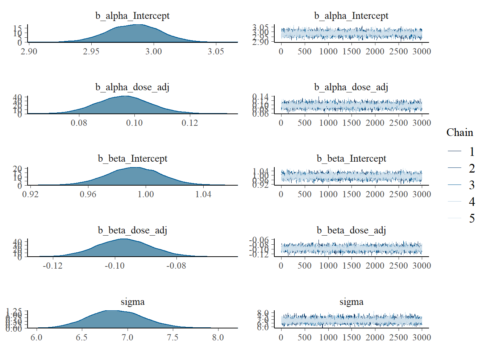
Since I want to see if the different initial conditions did something useful, I was trying to make a trace plot that shows warmup. Solomon Kurz has an example using the ggmcmc package, but his code doesn’t work for me, it always ignores the warmup. I used 6000 warmup samples and 3000 post-warmup samples for each chain. Currently, the figure only shows post-warmup.
For now, it’s another trace plot using the bayesplot package - also which has an example of making the plot I want, but for some reason the stanfit object inside the brms output does not contain the warmups. So for now, what’s shown doesn’t actually include the warmups. Leaving this plot for now and moving on…
# Another trace plot, using the bayesplot package
posterior <- rstan::extract(fit2$fit, inc_warmup = TRUE, permuted = FALSE)
bayesplot::mcmc_trace(posterior, n_warmup = 400, pars = variables(fit2)[c(1,2,3,4,5)])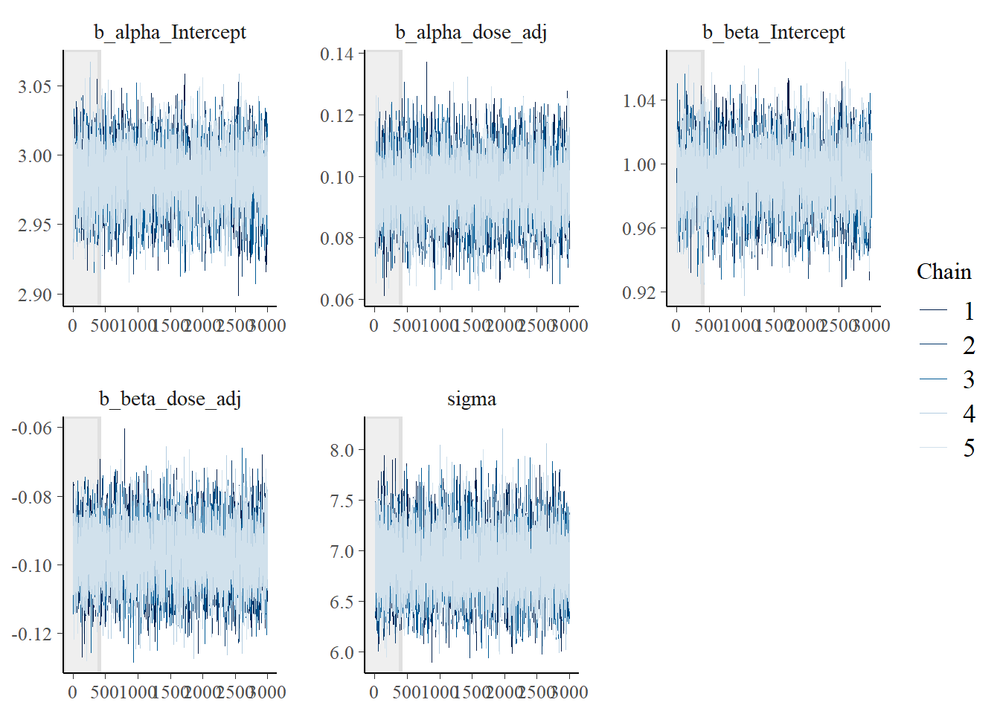
Here is a version of the trank plots. I’m pulling out the first 5 variables since the others are not that interesting for this plot, e.g., they contain prior samples. You can look at them if you want.
# Model 2a trank plots with bayesplot
bayesplot::mcmc_rank_overlay(fit2, pars = variables(fit2)[c(1,2,3,4,5)])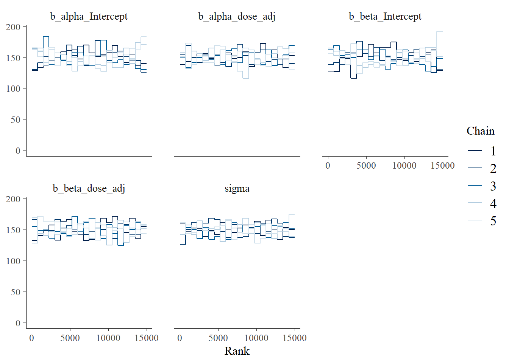
Another nice plot I saw was an autocorrelation plot. One wants little autocorrelation for parameters. This seems to be the case:
bayesplot::mcmc_acf(fit2, pars = variables(fit2)[c(1,2,3,4,5)])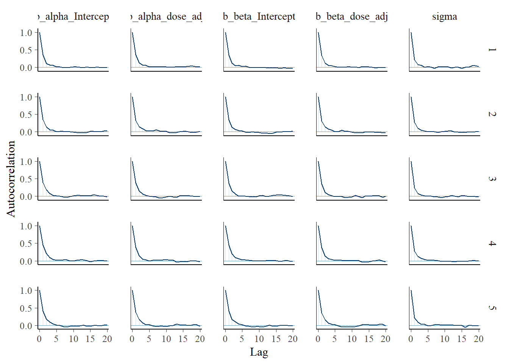
And finally a pair plot.
# Model 2a pair plot
# Correlation between posterior samples of parameters
pairs(fit2)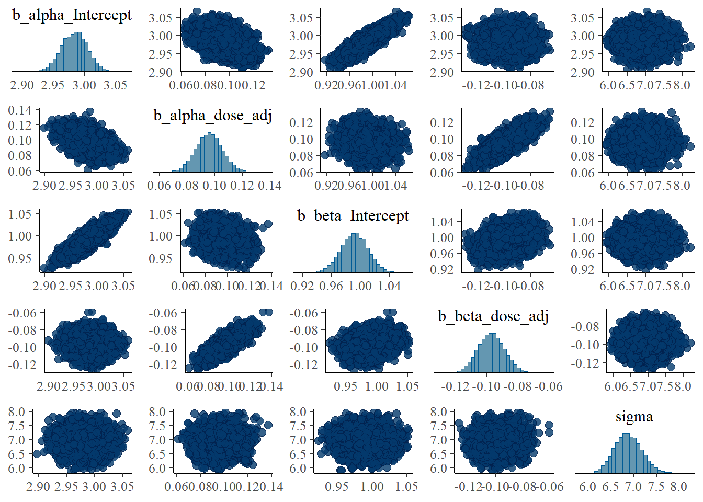
While the layout looks different - and I didn’t bother to try and make things look exactly the same between brms and rethinking - the overall results are similar. That’s encouraging.
Some of the plots already showed posterior distributions, but let’s look at those more carefully.
Models 1 and 3
Let’s explore those two models first. Recall that they are the same, apart from the prior definitions. As previously, the wider priors for model 1 make it less efficient. With the settings I used, run times were 417 minutes for model 1 versus 61 minutes for model 3.
Let’s see if the priors impact the results, i.e. the posterior distributions. We can actually do that by looking briefly at the summaries for both fits.
#save some typing
fit1 <- fl[[1]]$fit
fit3 <- fl[[3]]$fit
summary(fit1) Family: gaussian
Links: mu = identity; sigma = identity
Formula: outcome ~ exp(alpha) * log(time) - exp(beta) * time
alpha ~ 0 + id + dose_adj
beta ~ 0 + id + dose_adj
Data: fitdat (Number of observations: 264)
Draws: 5 chains, each with iter = 9000; warmup = 6000; thin = 1;
total post-warmup draws = 15000
Population-Level Effects:
Estimate Est.Error l-95% CI u-95% CI Rhat Bulk_ESS Tail_ESS
alpha_id1 3.50 1.67 0.26 6.80 1.00 2840 4734
alpha_id2 3.46 1.67 0.21 6.75 1.00 2839 4794
alpha_id3 3.26 1.67 0.02 6.56 1.00 2839 4760
alpha_id4 3.19 1.67 -0.05 6.49 1.00 2841 4760
alpha_id5 3.24 1.67 -0.01 6.53 1.00 2839 4760
alpha_id6 3.33 1.67 0.08 6.62 1.00 2839 4760
alpha_id7 3.28 1.67 0.03 6.58 1.00 2841 4796
alpha_id8 2.98 0.02 2.95 3.01 1.00 17885 10342
alpha_id9 2.91 0.02 2.88 2.94 1.00 17315 10942
alpha_id10 2.98 0.02 2.95 3.01 1.00 17656 10966
alpha_id11 2.94 0.02 2.91 2.97 1.00 18085 10133
alpha_id12 2.84 0.02 2.81 2.88 1.00 17692 11631
alpha_id13 2.97 0.02 2.94 3.00 1.00 18451 10345
alpha_id14 3.09 0.01 3.06 3.12 1.00 18387 10003
alpha_id15 2.95 0.02 2.91 2.98 1.00 17682 10963
alpha_id16 2.77 1.67 -0.52 6.01 1.00 2839 4781
alpha_id17 2.54 1.67 -0.76 5.79 1.00 2840 4750
alpha_id18 2.73 1.67 -0.57 5.97 1.00 2839 4798
alpha_id19 2.76 1.67 -0.53 6.01 1.00 2839 4820
alpha_id20 2.73 1.67 -0.56 5.98 1.00 2840 4771
alpha_id21 2.71 1.67 -0.59 5.96 1.00 2840 4751
alpha_id22 2.66 1.67 -0.64 5.91 1.00 2839 4807
alpha_id23 2.65 1.67 -0.64 5.90 1.00 2840 4764
alpha_id24 2.59 1.67 -0.70 5.84 1.00 2838 4762
alpha_dose_adj 0.22 0.73 -1.19 1.65 1.00 2839 4785
beta_id1 0.75 1.71 -2.66 4.10 1.00 2420 4179
beta_id2 0.65 1.71 -2.76 4.01 1.00 2420 4181
beta_id3 0.70 1.71 -2.72 4.04 1.00 2419 4158
beta_id4 0.71 1.71 -2.70 4.06 1.00 2419 4155
beta_id5 0.93 1.71 -2.48 4.28 1.00 2418 4167
beta_id6 0.68 1.71 -2.73 4.03 1.00 2419 4175
beta_id7 0.77 1.71 -2.64 4.13 1.00 2419 4155
beta_id8 1.01 0.01 0.99 1.04 1.00 16977 10323
beta_id9 0.91 0.02 0.88 0.94 1.00 17374 11382
beta_id10 0.98 0.01 0.96 1.01 1.00 18009 10155
beta_id11 1.15 0.01 1.13 1.18 1.00 18260 10293
beta_id12 1.05 0.01 1.02 1.07 1.00 17891 11580
beta_id13 1.01 0.01 0.98 1.04 1.00 18998 10824
beta_id14 0.95 0.01 0.92 0.98 1.00 18321 10396
beta_id15 0.79 0.02 0.75 0.82 1.00 17550 11046
beta_id16 1.36 1.71 -1.99 4.77 1.00 2418 4208
beta_id17 1.08 1.71 -2.27 4.49 1.00 2419 4159
beta_id18 1.36 1.71 -2.00 4.77 1.00 2421 4150
beta_id19 1.44 1.71 -1.92 4.85 1.00 2417 4173
beta_id20 1.09 1.71 -2.25 4.50 1.00 2420 4083
beta_id21 1.31 1.71 -2.04 4.73 1.00 2420 4118
beta_id22 1.24 1.71 -2.10 4.65 1.00 2421 4122
beta_id23 1.12 1.71 -2.23 4.53 1.00 2419 4157
beta_id24 1.09 1.71 -2.26 4.51 1.00 2419 4209
beta_dose_adj -0.21 0.74 -1.69 1.24 1.00 2419 4163
Family Specific Parameters:
Estimate Est.Error l-95% CI u-95% CI Rhat Bulk_ESS Tail_ESS
sigma 1.06 0.05 0.97 1.17 1.00 16342 11307
Draws were sampled using sample(hmc). For each parameter, Bulk_ESS
and Tail_ESS are effective sample size measures, and Rhat is the potential
scale reduction factor on split chains (at convergence, Rhat = 1).summary(fit3) Family: gaussian
Links: mu = identity; sigma = identity
Formula: outcome ~ exp(alpha) * log(time) - exp(beta) * time
alpha ~ 0 + id + dose_adj
beta ~ 0 + id + dose_adj
Data: fitdat (Number of observations: 264)
Draws: 5 chains, each with iter = 9000; warmup = 6000; thin = 1;
total post-warmup draws = 15000
Population-Level Effects:
Estimate Est.Error l-95% CI u-95% CI Rhat Bulk_ESS Tail_ESS
alpha_id1 3.31 0.25 2.83 3.80 1.00 2443 4189
alpha_id2 3.27 0.25 2.79 3.75 1.00 2418 4115
alpha_id3 3.07 0.25 2.59 3.55 1.00 2447 4120
alpha_id4 3.00 0.25 2.52 3.48 1.00 2433 4196
alpha_id5 3.05 0.25 2.56 3.53 1.00 2437 4206
alpha_id6 3.14 0.25 2.66 3.62 1.00 2465 4179
alpha_id7 3.09 0.25 2.61 3.57 1.00 2438 4311
alpha_id8 2.98 0.02 2.95 3.01 1.00 18493 10858
alpha_id9 2.91 0.02 2.87 2.94 1.00 18973 11242
alpha_id10 2.98 0.02 2.95 3.01 1.00 18479 10529
alpha_id11 2.94 0.02 2.91 2.97 1.00 18804 10454
alpha_id12 2.84 0.02 2.81 2.87 1.00 18873 11236
alpha_id13 2.97 0.02 2.94 3.00 1.00 19043 11438
alpha_id14 3.09 0.01 3.06 3.12 1.00 19247 10690
alpha_id15 2.95 0.02 2.91 2.98 1.00 19114 12099
alpha_id16 2.96 0.25 2.48 3.44 1.00 2432 4256
alpha_id17 2.73 0.25 2.25 3.21 1.00 2418 4214
alpha_id18 2.92 0.25 2.43 3.39 1.00 2433 4335
alpha_id19 2.95 0.25 2.47 3.43 1.00 2438 4308
alpha_id20 2.92 0.25 2.43 3.40 1.00 2427 4161
alpha_id21 2.90 0.25 2.41 3.37 1.00 2418 4311
alpha_id22 2.85 0.25 2.36 3.33 1.00 2439 4182
alpha_id23 2.84 0.25 2.36 3.32 1.00 2431 4213
alpha_id24 2.78 0.25 2.30 3.26 1.00 2438 4170
alpha_dose_adj 0.14 0.11 -0.07 0.35 1.00 2426 4307
beta_id1 1.05 0.24 0.58 1.53 1.00 2953 5165
beta_id2 0.96 0.24 0.49 1.43 1.00 2937 5242
beta_id3 1.00 0.24 0.53 1.47 1.00 2944 5168
beta_id4 1.01 0.24 0.54 1.49 1.00 2937 5142
beta_id5 1.24 0.24 0.76 1.71 1.00 2939 5218
beta_id6 0.99 0.24 0.52 1.46 1.00 2946 5117
beta_id7 1.08 0.24 0.60 1.55 1.00 2941 5223
beta_id8 1.01 0.01 0.99 1.04 1.00 18029 10844
beta_id9 0.91 0.02 0.88 0.93 1.00 18953 11005
beta_id10 0.98 0.01 0.96 1.01 1.00 18500 10509
beta_id11 1.15 0.01 1.13 1.17 1.00 18599 10418
beta_id12 1.05 0.01 1.02 1.07 1.00 19002 10853
beta_id13 1.01 0.01 0.98 1.04 1.00 18714 11040
beta_id14 0.95 0.01 0.92 0.98 1.00 19168 10286
beta_id15 0.79 0.02 0.75 0.82 1.00 18771 11344
beta_id16 1.06 0.24 0.58 1.53 1.00 2943 5165
beta_id17 0.78 0.25 0.30 1.25 1.00 2941 5155
beta_id18 1.05 0.24 0.58 1.53 1.00 2939 5207
beta_id19 1.14 0.24 0.66 1.61 1.00 2951 5251
beta_id20 0.79 0.25 0.31 1.26 1.00 2962 5253
beta_id21 1.00 0.24 0.52 1.47 1.00 2944 5222
beta_id22 0.94 0.24 0.46 1.41 1.00 2951 5207
beta_id23 0.82 0.25 0.34 1.29 1.00 2943 5263
beta_id24 0.79 0.25 0.31 1.26 1.00 2957 5311
beta_dose_adj -0.08 0.11 -0.29 0.13 1.00 2939 5258
Family Specific Parameters:
Estimate Est.Error l-95% CI u-95% CI Rhat Bulk_ESS Tail_ESS
sigma 1.06 0.05 0.97 1.17 1.00 15961 10880
Draws were sampled using sample(hmc). For each parameter, Bulk_ESS
and Tail_ESS are effective sample size measures, and Rhat is the potential
scale reduction factor on split chains (at convergence, Rhat = 1).Note the different naming of the parameters in brms. It’s unfortunately not possible (as far as I know) to get the names match the mathematical model. The parameters that have dose in their names are the ones we called \(a_1\) and \(b_1\) in our models. The many _id parameters are our previous \(a_0\) and \(b_0\) parameters. Conceptually, the latter are on the individual level. But we don’t have a nested/multi-level structure here, which seems to lead brms to consider every parameter on the same level, and thus labeling them all population level.
Now, let’s look at priors and posteriors somewhat more. First, we extract priors and posteriors.
#get priors and posteriors for models 1 and 3
m1prior <- prior_draws(fit1)
m1post <- as_draws_df(fit1)
m3prior <- prior_draws(fit3)
m3post <- as_draws_df(fit3)Now we can plot the distributions. I’m focusing on the \(a_1\) and \(b_1\) parameters since those are of more interest, and because I couldn’t figure out quickly how to get out and process all the individual level \(a_0\) and \(b_0\) parameters from brms 😁.
#showing density plots for a1
#make a data frame and get it in shape for ggplot
a1df <- data.frame(m1_prior = m1prior$b_alpha_dose_adj,
m1_post = m1post$b_alpha_dose_adj,
m3_prior = m3prior$b_alpha_dose_adj,
m3_post = m3post$b_alpha_dose_adj) %>%
pivot_longer(cols = everything(), names_to = c("model","type"), names_pattern = "(.*)_(.*)", values_to = "value")
# make plot
p1 <- a1df %>%
ggplot() +
geom_density(aes(x = value, color = model, linetype = type), size = 1) +
theme_minimal()
plot(p1)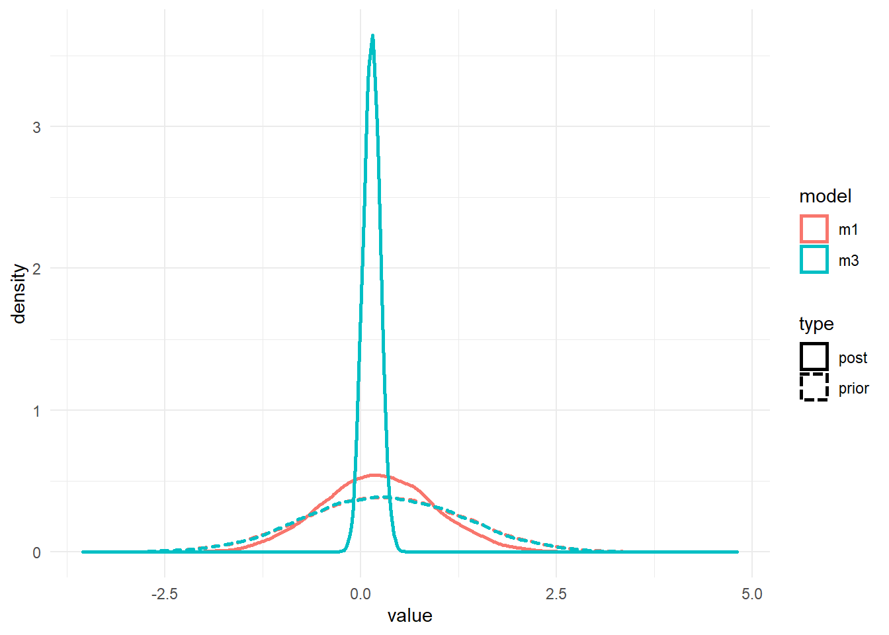
#save for display on post
ggsave(file = paste0("featured.png"), p1, dpi = 300, units = "in", width = 6, height = 6)
#showing density plots for b1
b1df <- data.frame(m1_prior = m1prior$b_beta_dose_adj,
m1_post = m1post$b_beta_dose_adj,
m3_prior = m3prior$b_beta_dose_adj,
m3_post = m3post$b_beta_dose_adj) %>%
pivot_longer(cols = everything(), names_to = c("model","type"), names_pattern = "(.*)_(.*)", values_to = "value")
p2 <- b1df %>%
ggplot() +
geom_density(aes(x = value, color = model, linetype = type), size = 1) +
theme_minimal()
plot(p2)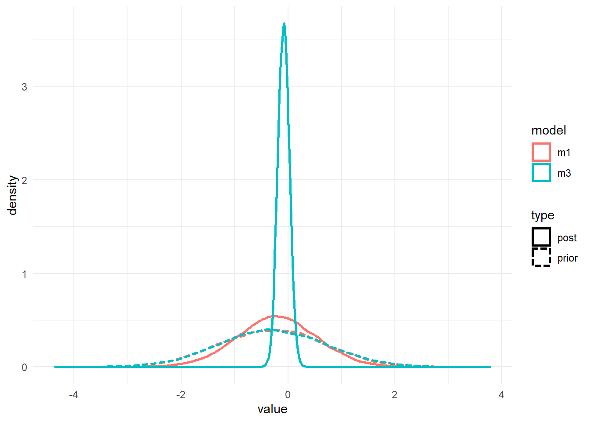
As before, the priors for the \(a_1\) and \(b_1\) parameters are the same. We only changed the \(a_0\) and \(b_0\) priors, but that change leads to different posteriors for \(a_1\) and \(b_1\). It’s basically the same result we found with ulam/rethinking.
It would be surprising if we did NOT find the same correlation structure again in the parameters, let’s check it.
# a few parameters for each dose
#low dose
pairs(fit1, variable = variables(fit1)[c(1:4,25)])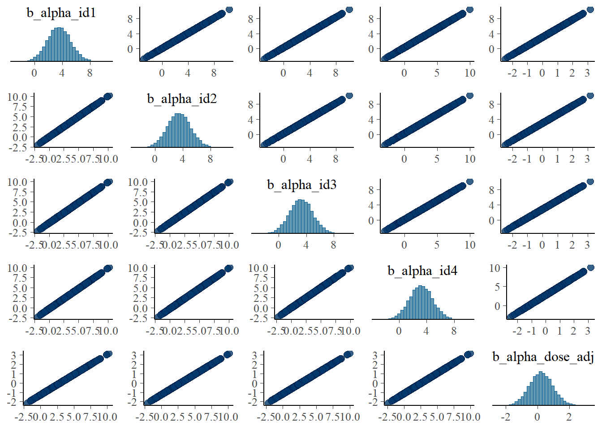
#medium dose
pairs(fit1, variable = variables(fit1)[c(8:11,25)])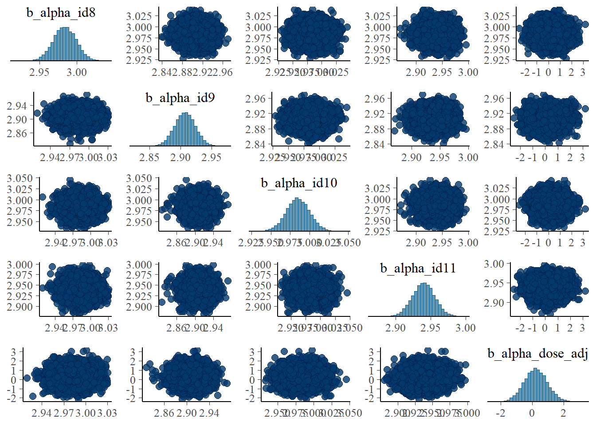
#high dose
pairs(fit1, variable = variables(fit1)[c(16:19,25)])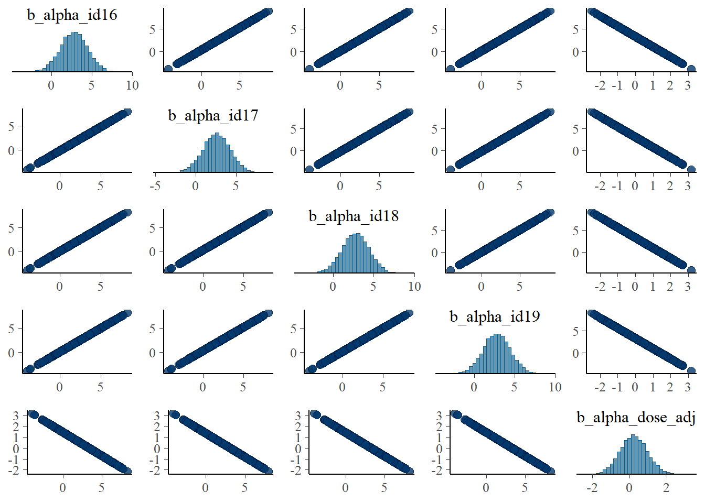
Apart from the unfortunate naming of parameters in brms, these are the same plots as we made for the ulam fits and show the same patterns.
Let’s look at the posteriors in numerical form.
# model 1 first
fit1pars = posterior::summarize_draws(m1post, "mean", "sd", "quantile2", default_convergence_measures())
#only entries for the a0 parameters
a0post <- m1post %>% dplyr::select(starts_with('b_alpha_id'))
fit1a0mean <- mean(colMeans(a0post))
#only entries for the b0 parameters
b0post <- m1post %>% dplyr::select(starts_with('b_beta_id'))
fit1b0mean <- mean(colMeans(b0post))
fit1otherpars <- fit1pars %>% dplyr::filter(!grepl('_id',variable)) %>%
dplyr::filter(!grepl('prior',variable))
print(fit1otherpars)# A tibble: 4 × 8
variable mean sd q5 q95 rhat ess_bulk ess_tail
<chr> <dbl> <dbl> <dbl> <dbl> <dbl> <dbl> <dbl>
1 b_alpha_dose_adj 0.224 0.726 -0.972 1.44 1.00 2839. 4785.
2 b_beta_dose_adj -0.212 0.744 -1.44 1.01 1.00 2419. 4163.
3 sigma 1.06 0.0514 0.981 1.15 1.00 16342. 11307.
4 lp__ -549. 5.58 -559. -540. 1.00 4974. 8286.print(c(fit1a0mean,fit1b0mean))[1] 2.960140 1.006334# repeat for model 3
fit3pars = posterior::summarize_draws(m3post, "mean", "sd", "quantile2", default_convergence_measures())
#only entries for the a0 parameters
a0post <- m3post %>% dplyr::select(starts_with('b_alpha_id'))
fit3a0mean <- mean(colMeans(a0post))
#only entries for the b0 parameters
b0post <- m3post %>% dplyr::select(starts_with('b_beta_id'))
fit3b0mean <- mean(colMeans(b0post))
fit3otherpars <- fit3pars %>% dplyr::filter(!grepl('_id',variable)) %>%
dplyr::filter(!grepl('prior',variable))
print(fit3otherpars)# A tibble: 4 × 8
variable mean sd q5 q95 rhat ess_bulk ess_tail
<chr> <dbl> <dbl> <dbl> <dbl> <dbl> <dbl> <dbl>
1 b_alpha_dose_adj 0.142 0.107 -0.0334 0.316 1.00 2426. 4307.
2 b_beta_dose_adj -0.0811 0.106 -0.254 0.0921 1.00 2939. 5258.
3 sigma 1.06 0.0515 0.982 1.15 1.00 15961. 10880.
4 lp__ -453. 5.60 -463. -444. 1.00 4605. 7829.print(c(fit3a0mean,fit3b0mean))[1] 2.9756367 0.9808696Again, model 1 seems worse, with higher uncertainty intervals for the \(a_1\) and \(b_1\) parameters and the mean further away from the true value.
We can also compare the models as we did for rethinking using these lines of code:
fit13comp <- loo_compare(add_criterion(fit1,"waic"),
add_criterion(fit3,"waic"),
criterion = "waic")Warning:
30 (11.4%) p_waic estimates greater than 0.4. We recommend trying loo instead.Warning:
29 (11.0%) p_waic estimates greater than 0.4. We recommend trying loo instead.print(fit13comp, simplify = FALSE) elpd_diff se_diff elpd_waic se_elpd_waic p_waic
add_criterion(fit1, "waic") 0.0 0.0 -416.3 11.7 43.5
add_criterion(fit3, "waic") 0.0 0.2 -416.3 11.7 43.5
se_p_waic waic se_waic
add_criterion(fit1, "waic") 4.3 832.5 23.4
add_criterion(fit3, "waic") 4.3 832.6 23.4 Model performance is similar between models. The WAIC values are also close to those reported by rethinking.
Comparison with the truth and ulam
The values used to generate the data are: \(\sigma =\) 1, \(\mu_a =\) 3, \(\mu_b =\) 1, \(a_1 =\) 0.1, \(b_1 =\) -0.1.
Since the models are the same as those we previously fit with ulam, only a different R package is used to run them, we should expect very similar results. This is the case. We find that as for the ulam fits, the estimates for \(a_0\), \(b_0\) and \(\sigma\) are similar to the values used the generate the data, but estimates for \(a_1\) and \(b_1\) are not that great. The agreement with ulam is good, because we should expect that if we fit the same models, results should - up to numerical/sampling differences - be the same, no matter what software implementation we use. It also suggests that we did things right - or made the same mistake in both implementations! 😁.
Why the WAIC estimates are different is currently not clear to me. It could be that the 2 packages use different definitions/ways to compute it. Or something more fundamental is still different. I’m not sure.
Model 2a
This is the model with only population-level estimates. We already explored it somewhat above when we looked at traceplots and trankplots and the like. Here is just another quick table for the posteriors.
m2post <- as_draws_df(fit2)
fit2pars = posterior::summarize_draws(m2post, "mean", "sd", "quantile2", default_convergence_measures())
fit2otherpars <- fit2pars %>% dplyr::filter(!grepl('prior',variable))
print(fit2otherpars)# A tibble: 6 × 8
variable mean sd q5 q95 rhat ess_bulk ess_t…¹
<chr> <dbl> <dbl> <dbl> <dbl> <dbl> <dbl> <dbl>
1 b_alpha_Intercept 2.98 0.0211 2.95 3.02 1.00 6244. 6691.
2 b_alpha_dose_adj 0.0960 0.00967 0.0802 0.112 1.00 6569. 7301.
3 b_beta_Intercept 0.992 0.0188 0.961 1.02 1.00 6387. 6724.
4 b_beta_dose_adj -0.0971 0.00862 -0.111 -0.0829 1.00 6947. 7786.
5 sigma 6.88 0.302 6.39 7.39 1.00 8391. 7850.
6 lp__ -892. 1.59 -895. -890. 1.00 4964. 7039.
# … with abbreviated variable name ¹ess_tailThe parameters that have _Intercept in their name are what we called \(\mu_a\) and \(\mu_b\), the ones containing _dose are our \(a_1\) and \(b_1\). We find pretty much the same results we found using ulam. Specifically, the main parameters are estimated well, but because the model is not very flexible, the estimate for \(\sigma\) is much larger, since it needs to account for all the individual-level variation we ommitted from the model itself.
Model 4
This is what I consider the most interesting and conceptually best model. It performed best in the ulam fits. Let’s see how it looks here. It is worth pointing out that this model ran much faster compared to models 1 and 3, it only took 10.5518333 minutes.
We’ll start with the summary for the model.
fit4 <- fl[[4]]$fit
m4prior <- prior_draws(fit4)
m4post <- as_draws_df(fit4)
summary(fit4) Family: gaussian
Links: mu = identity; sigma = identity
Formula: outcome ~ exp(alpha) * log(time) - exp(beta) * time
alpha ~ (1 | id) + dose_adj
beta ~ (1 | id) + dose_adj
Data: fitdat (Number of observations: 264)
Draws: 5 chains, each with iter = 9000; warmup = 6000; thin = 1;
total post-warmup draws = 15000
Group-Level Effects:
~id (Number of levels: 24)
Estimate Est.Error l-95% CI u-95% CI Rhat Bulk_ESS Tail_ESS
sd(alpha_Intercept) 0.09 0.02 0.07 0.13 1.00 3685 6514
sd(beta_Intercept) 0.12 0.02 0.09 0.16 1.00 4048 5853
Population-Level Effects:
Estimate Est.Error l-95% CI u-95% CI Rhat Bulk_ESS Tail_ESS
alpha_Intercept 2.99 0.02 2.95 3.03 1.00 3771 5404
alpha_dose_adj 0.09 0.01 0.07 0.11 1.00 3979 5040
beta_Intercept 0.99 0.02 0.94 1.03 1.00 3486 5134
beta_dose_adj -0.11 0.01 -0.13 -0.08 1.00 3855 5732
Family Specific Parameters:
Estimate Est.Error l-95% CI u-95% CI Rhat Bulk_ESS Tail_ESS
sigma 1.06 0.05 0.97 1.17 1.00 10136 10314
Draws were sampled using sample(hmc). For each parameter, Bulk_ESS
and Tail_ESS are effective sample size measures, and Rhat is the potential
scale reduction factor on split chains (at convergence, Rhat = 1).Next, the prior/posterior plots. To ensure one can see the priors, I’m cutting off the y-axis at 10, that’s why the posteriors look a bit weird. They do infected extend and peak like the distributions shown for models 1 and 3.
#showing density plots for a1 and b1
#make a data frame and get it in shape for ggplot
m4df <- data.frame(a1_prior = m4prior$b_alpha_dose_adj,
a1_post = m4post$b_alpha_dose_adj,
b1_prior = m4prior$b_beta_dose_adj,
b1_post = m4post$b_beta_dose_adj) %>%
pivot_longer(cols = everything(), names_to = c("parameter","type"), names_pattern = "(.*)_(.*)", values_to = "value")
# make plot
p1 <- m4df %>%
ggplot() +
ylim(0, 10) + xlim(-2, 2) +
geom_density(aes(x = value, color = parameter, linetype = type), adjust = 10, size = 1) +
ggtitle('model 4, parameters a1 and b1') +
theme_minimal()
plot(p1)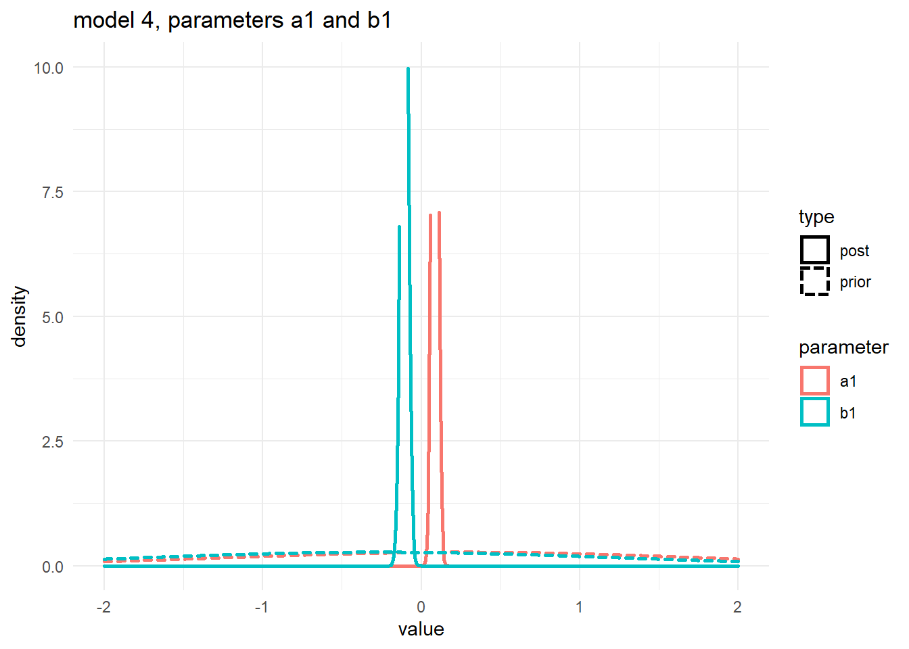
Numerical output for the posterior:
fit4pars = posterior::summarize_draws(m4post, "mean", "sd", "quantile2", default_convergence_measures())
fit4otherpars <- fit4pars %>% dplyr::filter(!grepl('_id',variable)) %>%
dplyr::filter(!grepl('prior',variable)) %>%
dplyr::filter(!grepl('z_',variable))
print(fit4otherpars)# A tibble: 6 × 8
variable mean sd q5 q95 rhat ess_bulk ess_tail
<chr> <dbl> <dbl> <dbl> <dbl> <dbl> <dbl> <dbl>
1 b_alpha_Intercept 2.99 0.0197 2.95 3.02 1.00 3771. 5404.
2 b_alpha_dose_adj 0.0861 0.0106 0.0688 0.104 1.00 3979. 5040.
3 b_beta_Intercept 0.987 0.0247 0.946 1.03 1.00 3486. 5134.
4 b_beta_dose_adj -0.106 0.0131 -0.127 -0.0844 1.00 3855. 5732.
5 sigma 1.06 0.0517 0.981 1.15 1.00 10136. 10314.
6 lp__ -468. 7.47 -481. -457. 1.00 2720. 4987.These estimates look good, close to the truth.
Finishing with the pairs lots:
# a few parameters for each dose
#low dose
pairs(fit4, variable = variables(fit4)[c(1:4,25)])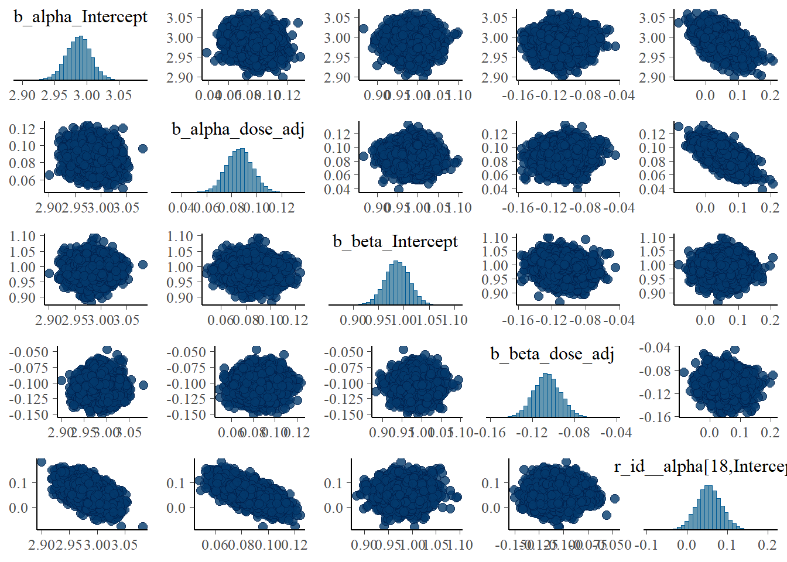
#medium dose
pairs(fit4, variable = variables(fit4)[c(8:11,25)])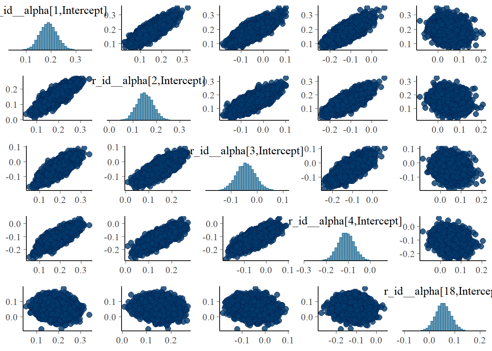
#high dose
pairs(fit4, variable = variables(fit4)[c(16:19,25)])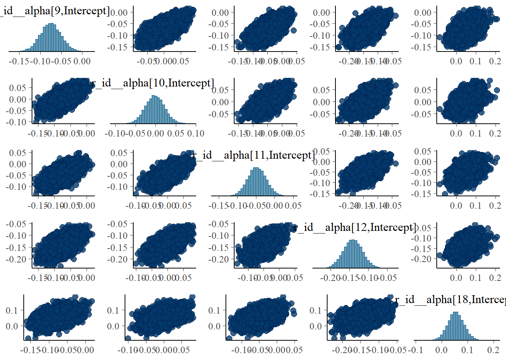
The strong correlations between parameters are reduced, the same we say with the ulam models.
As was the case for the ulam fits, model 4 seems to perform overall best.
Comparing all models
We can repeat the model comparison we did above, now including all 4 models. I’m looking now at both WAIC and LOO (leave one out). Note the various warning messages. We got that as well when we computed PSIS (which is similar to LOO) with rethinking.
fit1a <- add_criterion(fit1,c("waic","loo"))Warning:
30 (11.4%) p_waic estimates greater than 0.4. We recommend trying loo instead.Warning: Found 6 observations with a pareto_k > 0.7 in model 'fit1'. It is
recommended to set 'moment_match = TRUE' in order to perform moment matching for
problematic observations.fit2a <- add_criterion(fit2,c("waic","loo"))Warning:
5 (1.9%) p_waic estimates greater than 0.4. We recommend trying loo instead.fit3a <- add_criterion(fit3,c("waic","loo"))Warning:
29 (11.0%) p_waic estimates greater than 0.4. We recommend trying loo instead.Warning: Found 5 observations with a pareto_k > 0.7 in model 'fit3'. It is
recommended to set 'moment_match = TRUE' in order to perform moment matching for
problematic observations.fit4a <- add_criterion(fit4,c("waic","loo"))Warning:
27 (10.2%) p_waic estimates greater than 0.4. We recommend trying loo instead.Warning: Found 6 observations with a pareto_k > 0.7 in model 'fit4'. It is
recommended to set 'moment_match = TRUE' in order to perform moment matching for
problematic observations.compall1 <- loo_compare(fit1a,fit2a,fit3a,fit4a, criterion = "waic")
compall2 <- loo_compare(fit1a,fit2a,fit3a,fit4a, criterion = "loo")
print(compall1, simplify = FALSE) elpd_diff se_diff elpd_waic se_elpd_waic p_waic se_p_waic waic se_waic
fit4a 0.0 0.0 -415.7 11.7 42.7 4.3 831.4 23.4
fit1a -0.6 1.2 -416.3 11.7 43.5 4.3 832.5 23.4
fit3a -0.6 1.3 -416.3 11.7 43.5 4.3 832.6 23.4
fit2a -473.6 23.0 -889.4 22.4 10.3 3.0 1778.7 44.8 print(compall2, simplify = FALSE) elpd_diff se_diff elpd_loo se_elpd_loo p_loo se_p_loo looic se_looic
fit4a 0.0 0.0 -419.8 12.1 46.8 5.0 839.6 24.2
fit3a -0.6 1.4 -420.4 12.1 47.6 5.0 840.7 24.2
fit1a -1.1 1.5 -421.0 12.2 48.2 5.1 841.9 24.4
fit2a -469.6 23.0 -889.4 22.4 10.3 3.1 1778.9 44.8 Model 4 is considered best, though not by much. The above results, namely faster runtime and better estimates, speak more convincingly to the fact that model 4 is the best of these. The LOO is close to the PSIS metric reported by rethinking, even though I don’t think it’s defined and computed exactly the same.
Prior exploration
Since brms has a way of specifying the model and priors that makes direct mapping to the mathematical model a bit more opaque, it is useful to explore if the models we run are what we think we run. brms has two helpful functions for looking at priors. One can help set priors before fitting, the other shows priors after fitting. To make the output manageable, we look at the simplest model, model 2. This looks as follows
#defining model again
m2aeqs <- bf(outcome ~ exp(alpha)*log(time) - exp(beta)*time,
alpha ~ 1 + dose_adj,
beta ~ 1 + dose_adj,
nl = TRUE)
preprior2 <- get_prior(m2aeqs,data=fitdat,family=gaussian())
postprior2 <- prior_summary(fit2)
print(preprior2) prior class coef group resp dpar nlpar lb ub source
student_t(3, 0, 23) sigma 0 default
(flat) b alpha default
(flat) b dose_adj alpha (vectorized)
(flat) b Intercept alpha (vectorized)
(flat) b beta default
(flat) b dose_adj beta (vectorized)
(flat) b Intercept beta (vectorized)print(postprior2) prior class coef group resp dpar nlpar lb ub source
(flat) b alpha default
normal(0.3, 1) b dose_adj alpha user
normal(2, 2) b Intercept alpha user
(flat) b beta default
normal(-0.3, 1) b dose_adj beta user
normal(0.5, 2) b Intercept beta user
cauchy(0, 1) sigma 0 userThe first output shows the priors as the model sees them, before we apply any settings. It uses defaults. The second output shows the actual priors used when fitting the model, which are the ones we set. I find these functions and the information useful, but overall it’s still a bit confusing to me. For instance why are there those flat entries in there? I don’t know what they mean.
It gets worse for bigger models, and here things get confusing to me. This is looking at the priors for models 1,3 and 4. Recall that we expect \(2(N+1)+1\) priors for models 1 and 3, and \(2(N+1+1)+1\) for model 4. Since our data has 24 samples, we should find 51 and 53 priors. Here is what we get:
postprior1 <- prior_summary(fit1)
postprior3 <- prior_summary(fit3)
postprior4 <- prior_summary(fit4)
print(paste(nrow(postprior1),nrow(postprior3),nrow(postprior4)))[1] "53 53 13"Closer inspection shows that for models 1 and 3, the priors include those strange flat ones that only have a class but no coefficient. My guess is those are not “real”, and thus we actually have the right number of priors/parameters. This can be checked by looking at the names of all the parameters for say model 1. Here they are:
names(m1post) [1] "b_alpha_id1" "b_alpha_id2" "b_alpha_id3"
[4] "b_alpha_id4" "b_alpha_id5" "b_alpha_id6"
[7] "b_alpha_id7" "b_alpha_id8" "b_alpha_id9"
[10] "b_alpha_id10" "b_alpha_id11" "b_alpha_id12"
[13] "b_alpha_id13" "b_alpha_id14" "b_alpha_id15"
[16] "b_alpha_id16" "b_alpha_id17" "b_alpha_id18"
[19] "b_alpha_id19" "b_alpha_id20" "b_alpha_id21"
[22] "b_alpha_id22" "b_alpha_id23" "b_alpha_id24"
[25] "b_alpha_dose_adj" "b_beta_id1" "b_beta_id2"
[28] "b_beta_id3" "b_beta_id4" "b_beta_id5"
[31] "b_beta_id6" "b_beta_id7" "b_beta_id8"
[34] "b_beta_id9" "b_beta_id10" "b_beta_id11"
[37] "b_beta_id12" "b_beta_id13" "b_beta_id14"
[40] "b_beta_id15" "b_beta_id16" "b_beta_id17"
[43] "b_beta_id18" "b_beta_id19" "b_beta_id20"
[46] "b_beta_id21" "b_beta_id22" "b_beta_id23"
[49] "b_beta_id24" "b_beta_dose_adj" "sigma"
[52] "prior_b_alpha_id1" "prior_b_alpha_id2" "prior_b_alpha_id3"
[55] "prior_b_alpha_id4" "prior_b_alpha_id5" "prior_b_alpha_id6"
[58] "prior_b_alpha_id7" "prior_b_alpha_id8" "prior_b_alpha_id9"
[61] "prior_b_alpha_id10" "prior_b_alpha_id11" "prior_b_alpha_id12"
[64] "prior_b_alpha_id13" "prior_b_alpha_id14" "prior_b_alpha_id15"
[67] "prior_b_alpha_id16" "prior_b_alpha_id17" "prior_b_alpha_id18"
[70] "prior_b_alpha_id19" "prior_b_alpha_id20" "prior_b_alpha_id21"
[73] "prior_b_alpha_id22" "prior_b_alpha_id23" "prior_b_alpha_id24"
[76] "prior_b_alpha_dose_adj" "prior_b_beta_id1" "prior_b_beta_id2"
[79] "prior_b_beta_id3" "prior_b_beta_id4" "prior_b_beta_id5"
[82] "prior_b_beta_id6" "prior_b_beta_id7" "prior_b_beta_id8"
[85] "prior_b_beta_id9" "prior_b_beta_id10" "prior_b_beta_id11"
[88] "prior_b_beta_id12" "prior_b_beta_id13" "prior_b_beta_id14"
[91] "prior_b_beta_id15" "prior_b_beta_id16" "prior_b_beta_id17"
[94] "prior_b_beta_id18" "prior_b_beta_id19" "prior_b_beta_id20"
[97] "prior_b_beta_id21" "prior_b_beta_id22" "prior_b_beta_id23"
[100] "prior_b_beta_id24" "prior_b_beta_dose_adj" "prior_sigma"
[103] "lprior" "lp__" ".chain"
[106] ".iteration" ".draw" We can see that there are the right number of both priors and posterior parameters, namely 2 times 24 for the individual level parameters, plus 2 dose parameters and \(\sigma\).
I find model 4 more confusing. Here is the full list of priors:
print(postprior4) prior class coef group resp dpar nlpar lb ub source
(flat) b alpha default
normal(0.3, 1) b dose_adj alpha user
normal(2, 1) b Intercept alpha user
(flat) b beta default
normal(-0.3, 1) b dose_adj beta user
normal(0.5, 1) b Intercept beta user
cauchy(0, 1) sd alpha 0 user
cauchy(0, 1) sd beta 0 user
cauchy(0, 1) sd id alpha 0 (vectorized)
cauchy(0, 1) sd Intercept id alpha 0 (vectorized)
cauchy(0, 1) sd id beta 0 (vectorized)
cauchy(0, 1) sd Intercept id beta 0 (vectorized)
cauchy(0, 1) sigma 0 userAnd this shows the names of all parameters
names(m4post) [1] "b_alpha_Intercept" "b_alpha_dose_adj"
[3] "b_beta_Intercept" "b_beta_dose_adj"
[5] "sd_id__alpha_Intercept" "sd_id__beta_Intercept"
[7] "sigma" "r_id__alpha[1,Intercept]"
[9] "r_id__alpha[2,Intercept]" "r_id__alpha[3,Intercept]"
[11] "r_id__alpha[4,Intercept]" "r_id__alpha[5,Intercept]"
[13] "r_id__alpha[6,Intercept]" "r_id__alpha[7,Intercept]"
[15] "r_id__alpha[8,Intercept]" "r_id__alpha[9,Intercept]"
[17] "r_id__alpha[10,Intercept]" "r_id__alpha[11,Intercept]"
[19] "r_id__alpha[12,Intercept]" "r_id__alpha[13,Intercept]"
[21] "r_id__alpha[14,Intercept]" "r_id__alpha[15,Intercept]"
[23] "r_id__alpha[16,Intercept]" "r_id__alpha[17,Intercept]"
[25] "r_id__alpha[18,Intercept]" "r_id__alpha[19,Intercept]"
[27] "r_id__alpha[20,Intercept]" "r_id__alpha[21,Intercept]"
[29] "r_id__alpha[22,Intercept]" "r_id__alpha[23,Intercept]"
[31] "r_id__alpha[24,Intercept]" "r_id__beta[1,Intercept]"
[33] "r_id__beta[2,Intercept]" "r_id__beta[3,Intercept]"
[35] "r_id__beta[4,Intercept]" "r_id__beta[5,Intercept]"
[37] "r_id__beta[6,Intercept]" "r_id__beta[7,Intercept]"
[39] "r_id__beta[8,Intercept]" "r_id__beta[9,Intercept]"
[41] "r_id__beta[10,Intercept]" "r_id__beta[11,Intercept]"
[43] "r_id__beta[12,Intercept]" "r_id__beta[13,Intercept]"
[45] "r_id__beta[14,Intercept]" "r_id__beta[15,Intercept]"
[47] "r_id__beta[16,Intercept]" "r_id__beta[17,Intercept]"
[49] "r_id__beta[18,Intercept]" "r_id__beta[19,Intercept]"
[51] "r_id__beta[20,Intercept]" "r_id__beta[21,Intercept]"
[53] "r_id__beta[22,Intercept]" "r_id__beta[23,Intercept]"
[55] "r_id__beta[24,Intercept]" "prior_b_alpha_Intercept"
[57] "prior_b_alpha_dose_adj" "prior_b_beta_Intercept"
[59] "prior_b_beta_dose_adj" "prior_sigma"
[61] "prior_sd_id" "prior_sd_id__1"
[63] "lprior" "lp__"
[65] "z_1[1,1]" "z_1[1,2]"
[67] "z_1[1,3]" "z_1[1,4]"
[69] "z_1[1,5]" "z_1[1,6]"
[71] "z_1[1,7]" "z_1[1,8]"
[73] "z_1[1,9]" "z_1[1,10]"
[75] "z_1[1,11]" "z_1[1,12]"
[77] "z_1[1,13]" "z_1[1,14]"
[79] "z_1[1,15]" "z_1[1,16]"
[81] "z_1[1,17]" "z_1[1,18]"
[83] "z_1[1,19]" "z_1[1,20]"
[85] "z_1[1,21]" "z_1[1,22]"
[87] "z_1[1,23]" "z_1[1,24]"
[89] "z_2[1,1]" "z_2[1,2]"
[91] "z_2[1,3]" "z_2[1,4]"
[93] "z_2[1,5]" "z_2[1,6]"
[95] "z_2[1,7]" "z_2[1,8]"
[97] "z_2[1,9]" "z_2[1,10]"
[99] "z_2[1,11]" "z_2[1,12]"
[101] "z_2[1,13]" "z_2[1,14]"
[103] "z_2[1,15]" "z_2[1,16]"
[105] "z_2[1,17]" "z_2[1,18]"
[107] "z_2[1,19]" "z_2[1,20]"
[109] "z_2[1,21]" "z_2[1,22]"
[111] "z_2[1,23]" "z_2[1,24]"
[113] ".chain" ".iteration"
[115] ".draw" To compare directly, this is the model we want:
\[ \begin{aligned} Y_{i,t} & \sim \mathrm{Normal}\left(\mu_{i,t}, \sigma\right) \\ \mu_{i,t} & = \exp(\alpha_{i}) \log (t_{i}) -\exp(\beta_{i}) t_{i} \\ \alpha_{i} & = a_{0,i} + a_1 \left(\log (D_i) - \log (D_m)\right) \\ \beta_{i} & = b_{0,i} + b_1 \left(\log (D_i) - \log (D_m)\right) \\ a_{0,i} & \sim \mathrm{Normal}(\mu_a, \sigma_a) \\ b_{0,i} & \sim \mathrm{Normal}(\mu_b, \sigma_a) \\ a_1 & \sim \mathrm{Normal}(0.3, 1) \\ b_1 & \sim \mathrm{Normal}(-0.3, 1) \\ \mu_a & \sim \mathrm{Normal}(2, 1) \\ \mu_b & \sim \mathrm{Normal}(0.5, 1) \\ \sigma & \sim \mathrm{HalfCauchy}(0,1) \\ \sigma_a & \sim \mathrm{HalfCauchy}(0,1) \\ \sigma_b & \sim \mathrm{HalfCauchy}(0,1) \end{aligned} \]
If understand brms correctly, those z_ parameters are internal adjustments to make things more efficient and can otherwise be ignored. That means we have 2 times 24 parameters for the individual levels that all start with r_id. Those correspond to the \(a_{0,i}\) and \(b_{0,1}\), and they don’t have pre-defined priors, since they are computed based on other parameters. Then we have 2 dose parameters, which map to \(a_1\) and \(b_1\), both come with priors. We have 2 _Intercept parameters, which correspond to \(\mu_a\) and \(\mu_b\), again with priors. We have \(\sigma\) with prior, and the two sd_id parameters seem to be those we call \(\sigma_a\) and \(\sigma_b\) in our equations.
So it looks like there is a match between our mathematical model we want, and the way we implemented it in brms. Still, I find the brms notation confusing and not that easy to follow. In that respect I much prefer ulam/rethinking.
In any case, I somewhat convinced myself that I’m fitting the same models here with brms that I’m fitting with ulam.
Computing predictions
Looking at tables of estimates as we did so far is somewhat useful, but nothing can beat graphical inspection. So let’s plot the predictions implied by the fits for the models. The general strategy for that is to use the parameter estimates in the posterior, put them in the model, and compute the predictions. While the rethinking package had sim and link, for brms those functions are fitted and predict.
The code below produces predictions, both for the deterministic mean trajectory \(\mu\), and the actual outcome, \(Y\), which has added variation.
#this will contain all the predictions from the different models
fitpred = vector(mode = "list", length = length(fl))
# load the data we used for fitting
simdat <- readRDS("simdat.Rds")
#pull our the data set we used for fitting
#if you fit a different one of the simulated datasets, change accordingly
fitdat <- simdat$m3
#small data adjustment for plotting
plotdat <- fitdat %>% data.frame() %>% mutate(id = as.factor(id)) %>% mutate(dose = dose_cat)
# we are looping over each fitted model
for (n in 1:length(fl))
{
#get current model
nowmodel = fl[[n]]$fit
#make new data for which we want predictions
#specifically, more time points so the curves are smoother
timevec = seq(from = 0.1, to = max(fitdat$time), length=100)
Ntot = max(fitdat$id)
#data used for predictions
preddat = data.frame( id = sort(rep(seq(1,Ntot),length(timevec))),
time = rep(timevec,Ntot),
dose_adj = 0
)
#add right dose information for each individual
for (k in 1:Ntot)
{
#dose for a given individual
nowdose = unique(fitdat$dose_adj[fitdat$id == k])
nowdose_cat = unique(fitdat$dose_cat[fitdat$id == k])
#assign that dose
#the categorical values are just for plotting
preddat[(preddat$id == k),"dose_adj"] = nowdose
preddat[(preddat$id == k),"dose_cat"] = nowdose_cat
}
# estimate and CI for parameter variation
#brms equivalent to rethinking::link
#doing 89% CI
meanpred <- fitted(nowmodel, newdata = preddat, probs = c(0.055, 0.945) )
# estimate and CI for prediction intervals
# the predictions factor in additional uncertainty around the mean (mu)
# as indicated by sigma
# this is equivalent to rethinking::sim()
outpred <- predict(nowmodel, newdata = preddat, probs = c(0.055, 0.945) )
#place all predictions into a data frame
#and store in a list for each model
fitpred[[n]] = data.frame(id = as.factor(preddat$id),
dose = as.factor(preddat$dose_cat),
predtime = preddat$time,
Estimate = meanpred[,"Estimate"],
Q89lo = meanpred[,"Q5.5"],
Q89hi = meanpred[,"Q94.5"],
Qsimlo = outpred[,"Q5.5"],
Qsimhi = outpred[,"Q94.5"]
)
}
#########################
# generate plots showing data and model predictions
#########################Creating plots of the results
Now that we got the predictions computed, we can plot them and compare with the data. I’m showing the same uncertainty intervals I used for rethinking to make comparison easy.
#storing all plots
plotlist = vector(mode = "list", length = length(fl))
#adding titles to plots
titles = c('model 1','model 2a','model 3','model 4')
#again looping over all models, making a plot for each
for (n in 1:length(fl))
{
# ===============================================
plotlist[[n]] <- ggplot(data = fitpred[[n]], aes(x = predtime, y = Estimate, group = id, color = dose ) ) +
geom_line() +
geom_ribbon(aes(x=predtime, ymin=Q89lo, ymax=Q89hi, fill = dose, color = NULL), alpha=0.3, show.legend = F) +
geom_ribbon(aes(x=predtime, ymin=Qsimlo, ymax=Qsimhi, fill = dose, color = NULL), alpha=0.1, show.legend = F) +
geom_point(data = plotdat, aes(x = time, y = outcome, group = id, color = dose), shape = 1, size = 2) +
scale_y_continuous(limits = c(-30,50)) +
labs(y = "Virus load",
x = "days post infection") +
theme_minimal() +
ggtitle(titles[n])
ggsave(file = paste0(titles[n],".png"), plotlist[[n]], dpi = 300, units = "in", width = 7, height = 7)
}
#########################
# show the plots
#########################Showing the plots
Here are the plots for all models we considered.
It’s a bit hard to see, but each plot contains for each individual the data as symbols, the estimated mean as line, and the 89% credible interval and prediction interval as shaded areas.
plot(plotlist[[1]])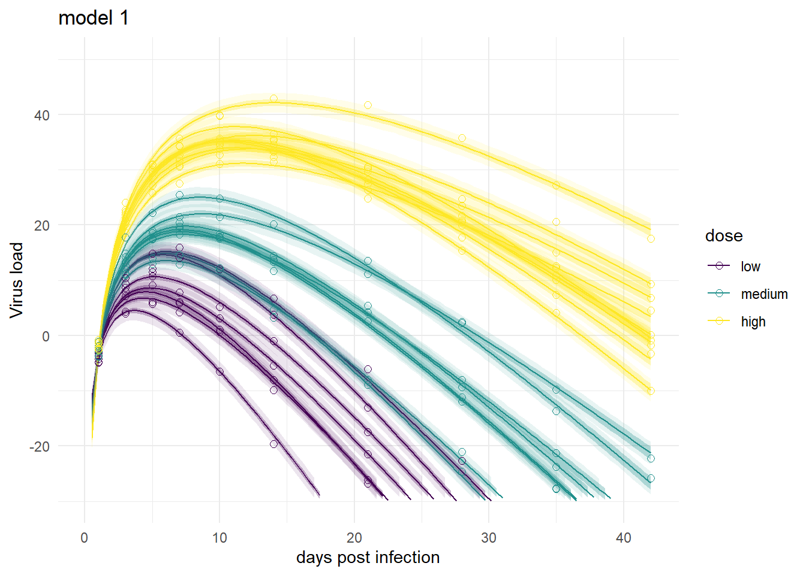
plot(plotlist[[3]])plot(plotlist[[2]])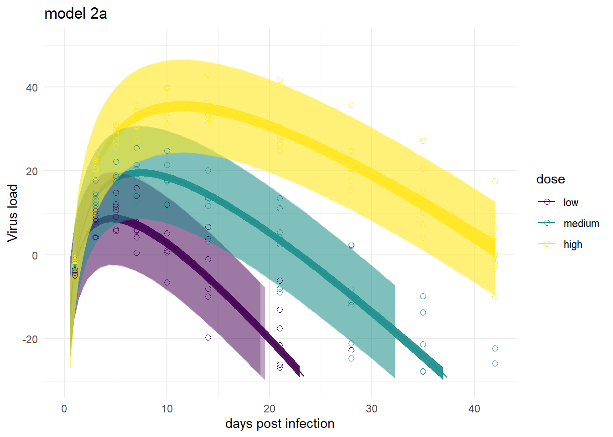
plot(plotlist[[4]])Mirroring the findings from above, the models produce very similar results, especially models 1,3 and 4. Model 2a shows the feature of having very wide prediction intervals, due to the fact that it can’t account for individual-level variation in the main model.
Summary and continuation
To sum it up, we repeated our previous fitting, now using the brms package instead of rethinking. While the two packages have different syntax, the models we fit are the same and thus the results are very close too. That’s comforting. If one approach had produced very different results, it would have meant something was wrong. Of course, as I was writing this series of posts, that happened many times and it took me a while to figure out how to get brms to do what I wanted it to 😁.
As of this writing, the one issue I’m almost but not yet fully certain about is if I really have a full match between my mathematical models and the brms implementations (I’m fairly certain the math and ulam implementations match). Though the comparison between ulam and brms results do suggest that I’m running the same models.
Overall, I like the approach of using both packages. It adds an extra layer of robustness. The rethinking code is very close to the math and thus quickly implemented and probably a good first step. brms has some features that go beyond what rethinking can (easily) do, so moving on to re-implementing models in brms and using that code for producing the final results can make sense.
This ends the main part of the tutorial (for now). There were several topics I wanted to discuss that didn’t fit here. If you are interested in some further musings, you can hop to this post, where I discuss a few further topics and variations.
Citation
BibTeX citation:
@online{handel2022,
author = {Andreas Handel},
editor = {},
title = {Bayesian Analysis of Longitudinal Multilevel Data Using Brms
and Rethinking - Part 3},
date = {2022-02-24},
url = {https://www.andreashandel.com/posts/2022-02-24-longitudinal-multilevel-bayes-3},
langid = {en}
}
For attribution, please cite this work as:
Andreas Handel. 2022. “Bayesian Analysis of Longitudinal
Multilevel Data Using Brms and Rethinking - Part 3.” February 24,
2022. https://www.andreashandel.com/posts/2022-02-24-longitudinal-multilevel-bayes-3.